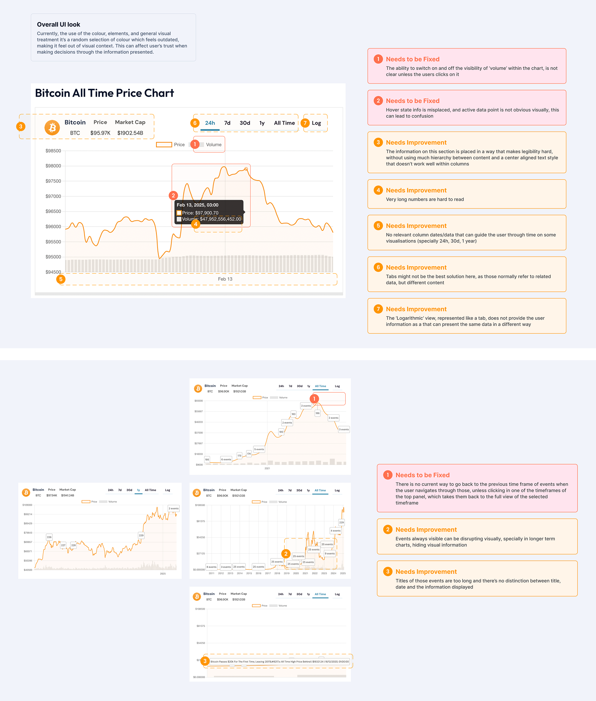

The Diagnostic (UX Audit)
My evaluation was categorised into three main levels of priority:
- What Worked Well: The core functionality was solid. The tool provided a great depth of information and successfully integrated relevant historical events into the price timeline.
- What Needed Improvement: Identified legibility and hierarchy issues. Certain functionalities were not immediately recognisable, and the general visual treatment lacked professional polish.
- What Needed Fixing: Critical issues regarding the Visibility of System Status and User Control. Users had difficulty undoing changes or understanding their current state within the navigation.
Below is a screenshot of how the chart was looking prior to the audit.

Competitor Analysis (Benchmarking)
To ensure the redesign met industry standards, I analysed market leaders: CoinMarketCap, Binance, and CoinGecko.
- Insights: I focused on their use of responsive navigation, "zoom and drag" capabilities, and how they handle high-density data.
- Takeaway: Top-tier platforms prioritise clean layouts and intuitive hover states to manage complexity without overwhelming the user.
Identified Pain Points
Through an evaluation of the existing tool, several critical usability and visual issues were identified:
- System Visibility & Control: Users had no clear way to undo changes or navigate back to previous timeframes after interacting with specific events.
- Cognitive Load: Very long, unformatted numbers were difficult to process at a glance.
- Information Hierarchy: The layout used centre-aligned text and poor column spacing, making legibility difficult in data-heavy sections.
- Visual Clutter: Overlapping event titles on long-term charts created visual noise, hiding the actual price movement.
- Visual Context: The colour palette and UI elements felt random, failing to provide a cohesive brand experience or a sense of financial security.
- Navigation & Interaction: The "Back" button was missing or non-functional when navigating event timeframes, leaving users stuck.

Strategic Solutions
I implemented a series of strategic design changes:
- General UI Update: Transitioned from a generic look to a polished, modern aesthetic with dedicated Light and Dark themes.
- Visibility & Status: Improved the feedback loop so users always know which timeframe or filter is active.
- User Control: Added functional controls to undo changes and navigate through historical data seamlessly.
- Recognition over Recall: Made actions and options visible (e.g., explicit toggles for Volume and Events) so users don't have to search for tools.
- Data Optimisation: Implemented numerical abbreviations (e.g., $190T instead of $190,000,000,000,000) and optimised the hierarchy of price and market cap display.
Design Execution (The Result)
The final proposal features a clean, high-fidelity interface (applied to the 99Bitcoins brand) that balances density with clarity.
- Interaction Design: A new vertical cursor line and pinpoint markers on the price line allow for surgical precision when reading data.
- Event Management: Introduced truncated titles and compact hover states to keep the chart readable even when multiple historical events occur simultaneously.


Lessons Learned
- Clarity is Trust: In the crypto space, visual professionalism directly correlates with the user's perception of data accuracy.
- Information Architecture Matters: Even the most valuable data is useless if it's not scannable. Small changes like text alignment and number formatting significantly reduce cognitive load.
- Heuristics as a Compass: Applying established UX principles (like Visibility of System Status) helped transform a functional tool into a delightful user experience.